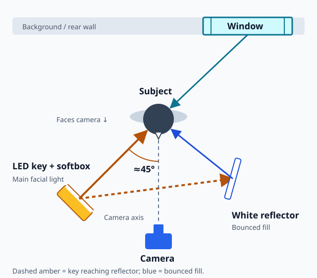
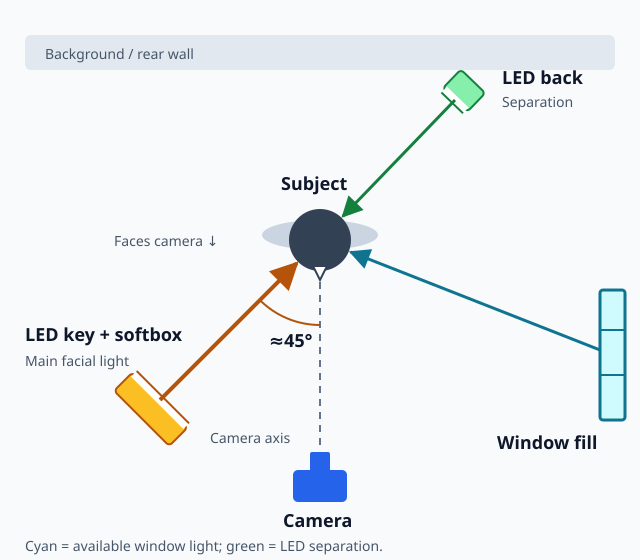
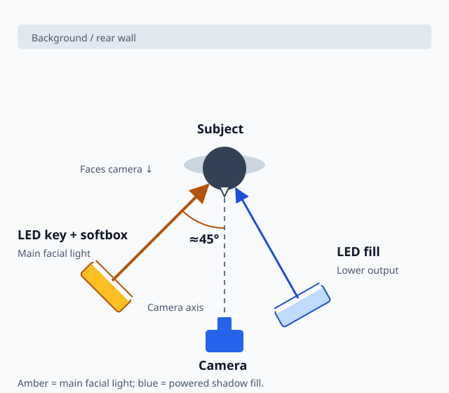
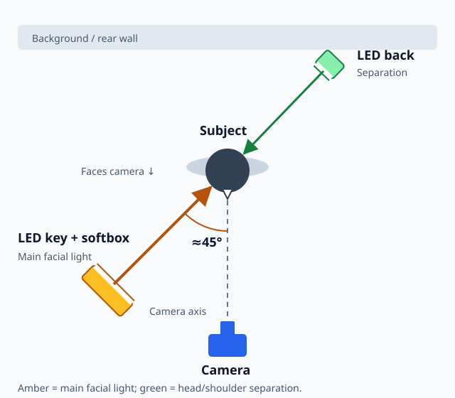

One-Light and Two-Light Setups
Learning Objectives
- Set up a complete one-light interview with a reflector as fill.
- Describe at least two effective two-light configurations using a minimal kit.
- Execute a quick setup drill to get from arrival to rolling in under five minutes.
- Identify the most common error in multi-light setups and how to avoid it.
Why Fewer Lights Is Usually Better in the Field
The full three-point setup — key, fill, and back light on three separate stands — is the theoretical ideal. In field production, however, you are frequently working alone or with one other person, in spaces not designed for video production, with limited time to set up and tear down. A three-light setup takes time, requires more power draws, more stands (more sandbag weight to carry), and more problem-solving when the space is small or oddly shaped.
One-light and two-light setups are not compromises forced by poor planning — they are the practical standard for most field interview work. Executed well, a one-light setup with a reflector is indistinguishable from a full three-point system in the final image. The discipline of working with fewer sources also forces you to think more clearly about what each light is doing and why.
The One-Light Interview Setup
A single LED panel in a softbox, positioned as the key light, combined with a reflector on the shadow side, covers the key and fill functions of three-point lighting. The back light is missing, but in many documentary and institutional contexts, this is acceptable — particularly when the background is naturally lighter than the subject or when the aesthetic is deliberately naturalistic.
Position the LED softbox at 30 to 45 degrees to the side of camera, 30 to 45 degrees above eye level. This is the same key position as in the three-point system. Set the subject-to-light distance to achieve a correct exposure at a comfortable aperture and ISO. Place a large white reflector — a 42-inch or larger 5-in-1 reflector — on the shadow side of the subject, angled to catch the key light and bounce it back toward the face. The white surface of the reflector creates a fill that is inherently softer and always naturally proportioned to the key. As the key gets brighter, so does the reflected fill.
Control the contrast ratio by moving the reflector closer (more fill, lower contrast) or farther away (less fill, higher contrast). A large white reflector often gives gentle fill, but its position and illuminated area still matter. Check for unwanted shadows or reflections rather than assuming reflected light cannot create them. This simplicity is one reason experienced operators often prefer the reflector fill approach even when they have a second powered light available.
A 5-in-1 reflector gives you four surface options: white (soft fill), silver (brighter fill with a slight cool cast), gold (warm fill for skin-flattering warmth), and black (negative fill to increase contrast). The white side is the right choice for most interview work. Reserve silver and gold for specific creative choices, not as defaults.
Speed Advantage of the One-Light Setup
An experienced operator can set up a one-light interview in under three minutes: extend the stand, attach the softbox, connect power, position the stand, set the reflector, set white balance on camera, check exposure. This speed matters enormously in documentary and news production, where subjects may become less cooperative or the moment may pass if setup takes too long. Practicing the one-light setup until it is automatic is a foundational skill.
The one-light approach is well-suited for documentary interviews, news-style footage, informational video, and any situation where the look should feel natural and unproduced. It is less appropriate for highly polished corporate productions where viewers may have expectations set by studio-quality lighting.
Two-Light Setup Options
Choose a configuration to see where each source sits and what it contributes. The first example uses one powered light with a reflector and available window light; the other three use two powered lights. Set the camera and subject first, then choose the arrangement that solves your lighting problem.
Key + reflector + window backlight
One powered fixture + window light
Use this when a window behind the subject provides a useful edge or separation. The LED lights the face; a white reflector redirects some key light into the shadows.

LED key + window fill + LED back
Two powered fixtures + window light
Use this when a large window on the opposite front side can lift the face shadows. The second LED goes behind the subject to create separation.

Two LEDs: key + fill
Two powered fixtures
Use this when there is no useful window and the shadow side needs more light. Both fixtures are in front: the key gives direction, and the softer, lower-output fill lifts the shadows.

LED key + small LED hair light
Two powered fixtures
Use this when the face already has acceptable shadow detail but the head or shoulders merge with the background. The second light goes behind and above the subject, not onto the background wall.

Original course overhead plans, not to scale. Arrows show the direction of light, not beam width; diagram colors identify roles, not actual light color. On small screens, scroll the diagram sideways. Powered fixtures have white emitting faces; the white reflector redirects incoming light. Key and back-light height follow the three-point placement and height diagrams.
In each configuration, the key light is the anchor. Set it first, confirm the exposure and shadow quality, and then add the second element. The second light should enhance the setup without fighting the key or creating confusion about where the light is coming from.
The Quick Setup Drill
Use this sequence every time, regardless of how many lights you are setting up. Consistency in process prevents forgotten steps and reduces setup errors.
Step one: walk the space and identify the best camera position and background. This determines where the subject sits and, therefore, where every light goes. Do not set up lights before you know where the camera will be. Step two: position the subject. Step three: set the key light — position, height, angle, diffusion, and power. Check exposure. Step four: add fill — either position the reflector or set the fill light. Check the shadow side on your monitor. Step five: if using a back light, position and power it. Check for lens flare, adjust barn doors. Step six: check the background. Is it too bright, too dark, or distracting? Step seven: do a final full-frame check on the monitor with the subject in place. Look at the whole image, not just the face.
Over-lighting is among the most common errors in field production. Adding more lights than necessary creates multiple overlapping shadows from different directions, which immediately signals to the viewer that the scene is heavily lit. It also creates inconsistent color if sources are at different color temperatures. Resist the impulse to add more lights just because you have them. Stop adding when the image looks right.
In a one-light interview setup, what replaces the fill light?
Knowing When to Stop Adding Lights
Every light you add to a setup creates new potential problems: more shadows, more color matching challenges, more power requirements, more stands to sandbag, more time to set up and tear down. The question to ask before adding each light is: what specific problem am I solving with this? If you cannot answer that question clearly, do not add the light.
Common valid reasons to add a light: the shadow side of the face is too dark (add fill); the subject is merging into the background (add back light or adjust camera angle); the background is too dark and needs brightening (add a background light). Adding a light because "it might help" is not a valid reason. Your decisions should be deliberate and purposeful.
What is the first step in the quick setup drill, before positioning any lights?
See It in Practice
Use these public examples alongside the lesson, then try the short exercise.
- Location examples · PDF
ARRI Lighting Handbook — two-light interview, pp. 27–28
Study the two-light interview and placement diagram. Decide which source you would retain with only one powered fixture.
Try This
Use one soft key and a reflector. Record once with the reflector close, once farther away, and once removed. Choose the contrast you would use for a straightforward interview.
Key Takeaways
- A one-light setup with a reflector fill is the practical standard for most field interview work and can be set up in under three minutes.
- A white reflector redirects key light into the shadows; adjust its position and check the result on camera.
- Two-light configurations should use the location's available features — windows, walls — as third-light substitutes where possible.
- Always identify camera position and background before setting up any lights.
- Over-lighting creates multiple overlapping shadows and color inconsistency — add lights only when solving a specific, identified problem.
- Consistency in setup sequence prevents errors and saves time under pressure.